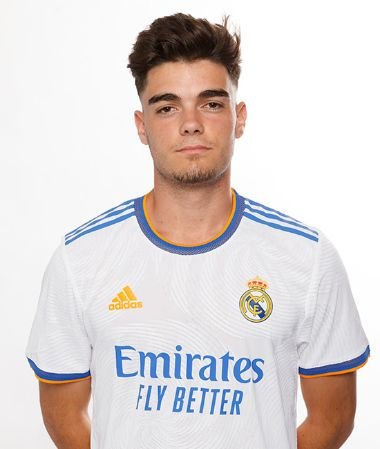
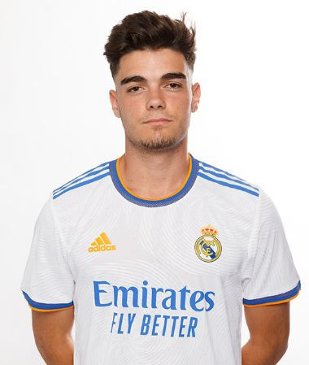

A Real Madrid hátvédei
| Név |
Nemzetiség |
Születési idő |
Mezszám |
Piaci érték |
Korábbi csapat |
| Dani Carvajal |
Spanyol |
1992. január 12. |
2 |
25 millió euró |
Utánpótlásból kinevelt játékos |
| Éder Militão |
Brazil |
1998. január 18. |
3 |
40 millió euró |
Porto |
| David Alaba |
Osztrák |
1992. június 24. |
4 |
55 millió euró |
Bayern München |
| Jesús Vallejo |
Spanyol |
1997. január 5. |
5 |
5 millió euró |
Real Zaragoza |
| Nacho Fernandez |
Spanyol |
1990. január 18. |
6 |
8 millió euró |
Utánpótlásból kinevelt játékos |
| Marcelo |
Brazil |
1988. május 12. |
12 |
5 millió euró |
Fluminense |
| Ferland Mendy |
Francia |
1995. június 8. |
23 |
50 millió euró |
Olympique Lyon |
| Miguel Gutiérrez |
Spanyol |
2001. július 27. |
35 |
10 millió euró |
Utánpótlásból kinevelt játékos |


 
